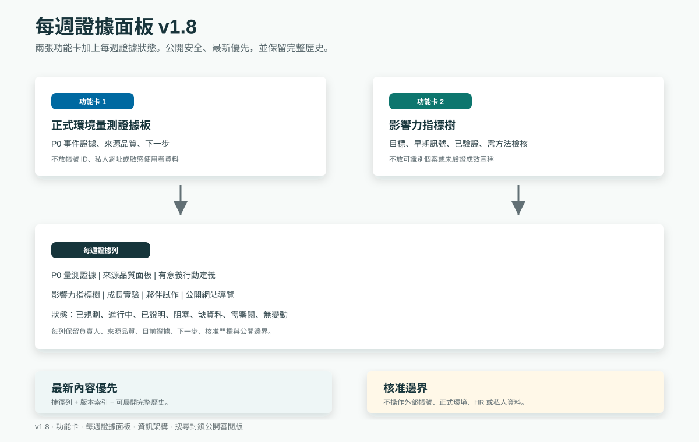
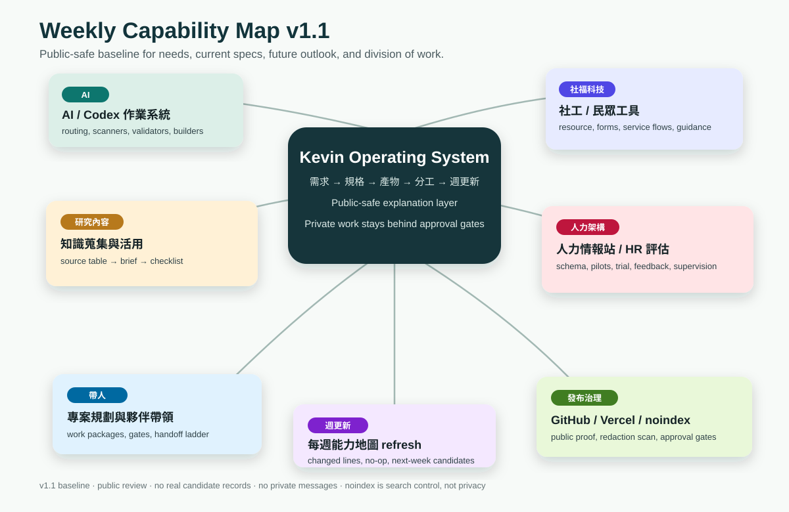
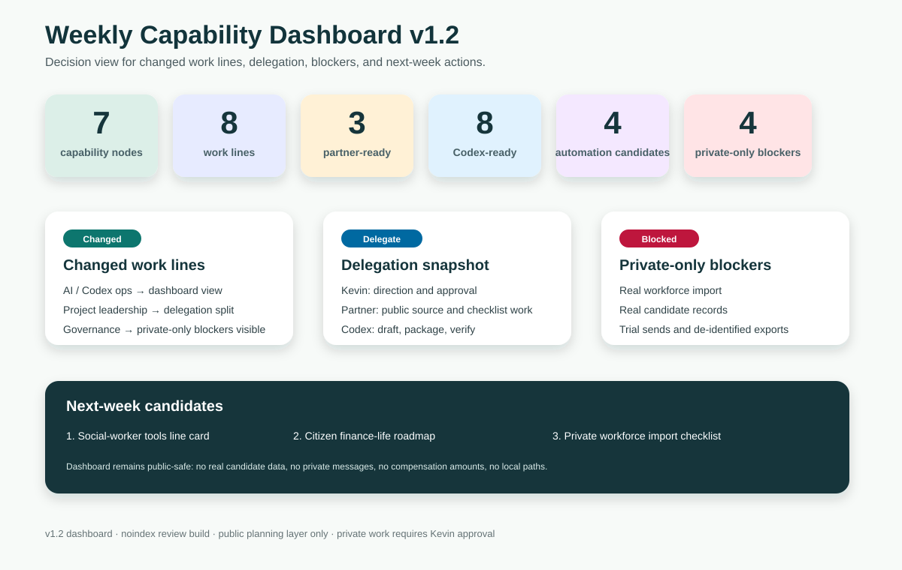
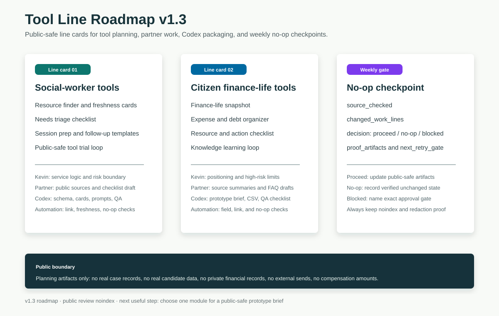
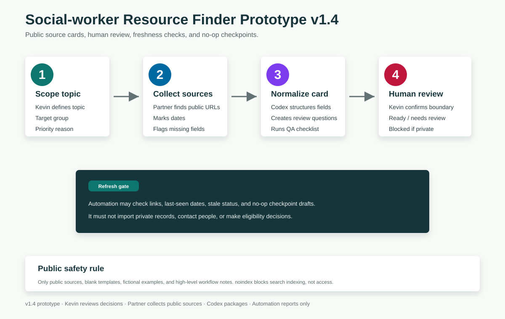
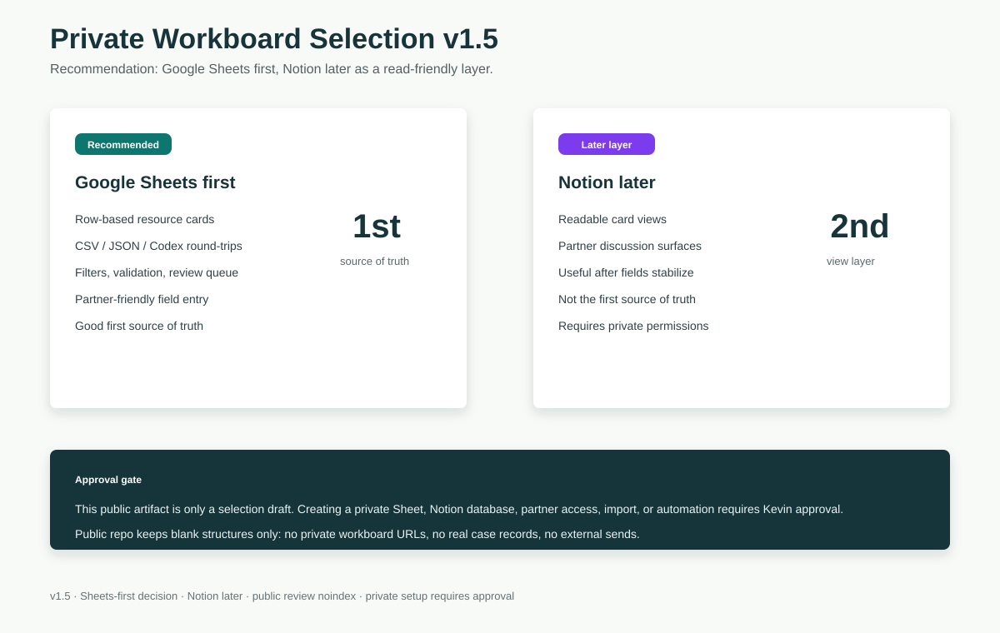
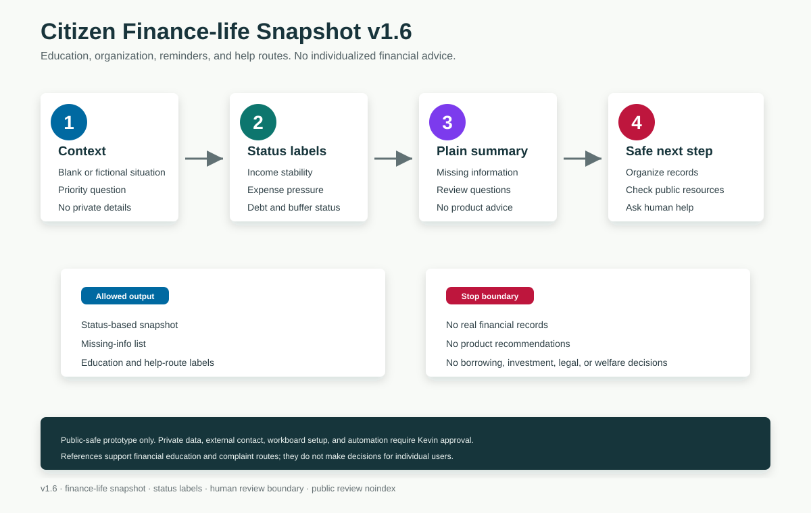
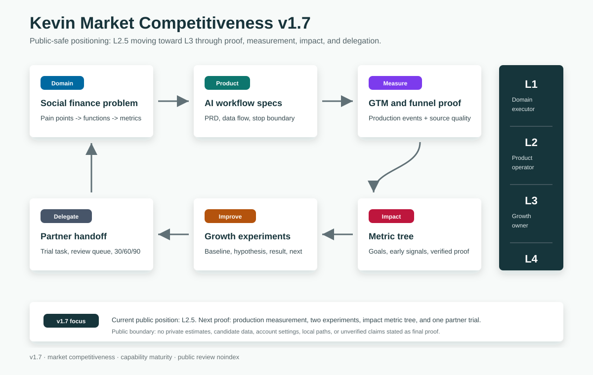

正式環境量測證據板
整理 P0 事件證據、來源品質、目前證據、下一步與核准門檻，證明量測不是只有規劃。
公開審閱版 / 搜尋封鎖
這份公開審閱版把一路累積在 Codex 裡的工作，整理成能力地圖、工作版圖、分工矩陣與第一階段夥伴需求。
最新工作 / v1.8
v1.8 不再只把新版追加在頁面底部，而是把目前最需要討論的內容放到最前面：兩張公開安全功能卡、每週證據面板，以及更好找的版本索引。
整理 P0 事件證據、來源品質、目前證據、下一步與核准門檻，證明量測不是只有規劃。
把目標、早期訊號、已驗證證據、需要方法檢核的宣稱分清楚，避免把未驗證宣稱寫成結論。
新增固定捷徑列、版本索引與完整歷史區，讓日常查看不用一路滑到底。

兩張公開安全功能卡的機器可讀版本，含輸入、輸出、驗收條件與停止條件。
開啟功能卡 JSON人可讀說明，聚焦正式環境量測證據板與影響力指標樹。
開啟功能卡說明每週證據面板，追蹤已規劃、已證明、缺資料、需審閱、無變動等狀態。
開啟證據面板 JSONGoogle Sheets / Notion 可轉用的每週證據工作板欄位。
開啟證據面板 CSV說明狀態標籤、來源品質標籤、每週檢查問題與公開安全邊界。
開啟證據面板說明網站過長的改版計畫：最新優先、版本索引、完整歷史區。
開啟資訊架構計畫Agent OS 討論收斂摘要，保留採納、驗證與暫停項目。
開啟 Agent 討論摘要確認 v1.8 的文字、操作習慣、核准邊界與公開審閱呈現適合台灣讀者。
開啟台灣語境檢核視覺化說明兩張功能卡、證據列、核准門檻與資訊架構。
開啟 v1.8 SVG確認 v1.8 是公開安全的證據規劃與導覽改版，不是私人分析系統或 HR 系統。
開啟 v1.8 治理卡本版公開套件掃描報告，確認沒有敏感實值、私有來源或帳號資訊。
開啟 v1.8 掃描報告| 證據項目 | 本週狀態 | 下一步 | 公開邊界 |
|---|---|---|---|
| P0 量測證據 | 已規劃 / 缺資料 | 建立去識別 P0 事件證據檢核表。 | 不公開帳號 ID、容器 ID、私人網址或使用者層級資料。 |
| 影響力指標樹 | 已規劃 / 去識別摘要 | 把每個項目標成目標、早期訊號、已驗證或需要方法檢核。 | 不把未驗證宣稱寫成最終證據。 |
| 公開網站導覽 | 已證明 / 人工檢核 | 部署後驗證桌機與手機能快速找到 v1.8 與歷史版本。 | 舊版本不刪除，只放入完整歷史區。 |
版本索引
日常先看 v1.8；需要追溯脈絡時，再從這裡打開完整歷史。點舊版本捷徑時，完整歷史區會自動展開。
這裡保留所有歷史版本與脈絡。日常查看建議先看上方 v1.8 最新工作區與版本索引。
營運地圖
Kevin 的工作不是單一職位，而是一個社福科技營運系統：把社工、民眾、財務、產品、內容、報表與自動化串成可交付的服務。

重點摘要
Kevin 現在最需要的不是單純補一位助理，而是把自己身上的多重職能拆成可以被夥伴、Codex 與自動化接住的作業系統。
能力樹
這裡先用公司經營視角，而不是履歷技能清單，整理目前已經浮現的能力主幹。
| 能力主幹 | 目前實際在做 | 未來組織化方式 |
|---|---|---|
| 社福科技產品規劃 | 把社工、家庭經濟、財務工具與服務場景轉成產品方向。 | Kevin 保留方向判斷，PM 協助規格化。 |
| 社工可用工具開發 | 規劃社工專區、財務風險辨識、個案紀錄、資源連結與輔導流程。 | 社福產品助理做需求整理與測試。 |
| 一般民眾生活財務工具 | 規劃財務健檢、風險快篩、知識庫、AI 問答與生活改善工具。 | 內容助理與產品助理共同維護。 |
| 資料與成效判讀 | 讀報表、漏斗、廣告、使用者行為與回饋訊號。 | 資料助理先整理，Kevin 做策略判斷。 |
| 新知與技能蒐集活用 | 把 AI、社福、財務、產品與自動化方法轉成可用流程。 | 建立研究雷達與可實驗清單。 |
| 專案規劃與交付 | 把模糊需求拆成階段、任務、驗收、發布與風險。 | 第二階段導入產品/流程 PM。 |
| 夥伴帶領與訓練 | 把判斷變成 SOP、檢查表、回報節奏與審核門檻。 | 用任務卡與 demo 節奏訓練新人。 |
| Codex 與自動化治理 | 建立自動化、技能、記憶、無變動規則與批准界線。 | 高風險仍需 Kevin 審核。 |
工作版圖
這些不是彼此分散的雜事，而是同一個社福科技營運系統的不同功能。
社工專區、財務健檢、工具流程、使用者回饋、產品 QA。
日報、週報、月報、漏斗、廣告、成效與異常解讀。
通知篩選、回饋保護、草稿、審核、事件與狀態追蹤。
文章、知識庫、教材、財務韌性、社福資源整理。
課務、表單、核銷、提醒、角色工作台與流程盤點。
報告、策略頁、資源站、政策導覽與 production 驗證。
資料擷取、分類、新鮮度檢查、靜態資料站。
任務路由、技能、記憶、批准門檻、週期治理。
人力情報站、能力盤點、薪資評估、夥伴梯隊。
工具產品線
目前至少有三條工具產品線，應該成為未來人力配置的核心依據。
人力架構
第一個目標不是找一個全能替身，而是找能接住第一層工作的夥伴。
先接資料整理、產品測試、社工回饋整理、知識庫初稿、報表素材與 Codex 任務紀錄。
把需求變成規格、排程、任務卡、驗收清單與跨人協作節奏。
接資料管線、靜態站、腳本、GitHub / Vercel、儀表板與工具維護。
當文章、教材、社福資源與新知蒐集量變大時，建立內容產線。
分工矩陣
方向、取捨、外部關係、敏感決策、產品最後判斷、是否發布。
整理、測試、回報、初稿、需求初判、報表素材、活動收尾。
摘要、格式化、分類、比對、初版表格、提示清單、草稿生成。
固定查詢、週期報表、提醒、資料同步、驗證門檻、無變動判斷。
工作線責任地圖 / v0.2
這裡用「主標記」判斷長期主責，不代表其他角色完全不碰；實務上會由 Kevin 定方向，Codex 建結構，夥伴接穩定工作，自動化處理固定節奏。
| 工作線 | 主標記 | 頻率 | 風險 | 可訓練 | 第一位夥伴可接 | 先拆出去的內容 |
|---|---|---|---|---|---|---|
| 好理家在產品營運、社工可用工具 | Kevin 做 | 每週 | 高 | 中 | 20-30% | 訪談整理、產品 QA、社工回饋歸納、需求初判。 |
| 一般民眾生活財務工具 | Kevin 做 | 每週 | 高 | 中 | 20-35% | 案例分類、知識卡初稿、用語測試、使用者問題整理。 |
| 新知、AI 方法、社福與財務技能蒐集 | Codex 做 | 每週 | 中 | 高 | 50-70% | 資料蒐集、摘要、比較表、轉成內部訓練素材。 |
| 專案規劃、任務拆解、驗收設計 | Kevin 做 | 每案 | 高 | 中 | 25-40% | 夥伴維護進度表；Codex 產 WBS、風險與驗收清單。 |
| 夥伴帶領、訓練、品質管理 | Kevin 做 | 每週 | 高 | 中 | 20-35% | SOP、檢核表、訓練材料、交辦紀錄與回饋整理。 |
| 日報、週報、月報與工作紀錄系統 | 自動化 | 每日 / 每週 / 每月 | 中 | 高 | 70-85% | 固定產出、同步、初檢、例外清單；Kevin 看摘要。 |
| Google Ads 到 FamilyFin 時間軸 | 自動化 | 每日 | 中高 | 高 | 80-90% | 讀取前日數據、寫入時間軸、驗證、無變動判斷。 |
| Gmail 最新 FamilyFin 統計報告檢查 | 自動化 | 每日 / 按需 | 中 | 高 | 75-90% | 唯讀查詢、摘要、連結回報、檢查點更新。 |
| Gmail 清理、指定回饋保護、safe-trash | Codex 做 | 每週 | 高 | 中 | 35-55% | 候選清單、脈絡閱讀、保護清單；刪除仍需明確授權。 |
| InfoCenter 文章事實查核 | Codex 做 | 每篇 / 批次 | 中高 | 中 | 35-50% | 即時查核、逐篇修正建議、引用整理、風險提示。 |
| InfoCenter / LINE / Google Sheet 流程對照 | Codex 做 | 每週 / 專案 | 中 | 中高 | 45-65% | 狀態比對、缺漏偵測、匯入檔、提醒與追蹤清單。 |
| 課務、表單、核銷、提醒、角色工作台 | 夥伴做 | 每週 / 課前 | 中 | 高 | 60-80% | 資料確認、表單整理、提醒、回報、核銷證據初檢。 |
| FamilyFin 知識戰情室、文章包門檻 | Codex 做 | 每週 / 雙週 | 高 | 中 | 30-45% | 候選主題、品質門檻、歷史整理、阻擋原因回報。 |
| 公開成果發布、GitHub / Vercel / 搜尋封鎖 | Codex 做 | 每案 | 高 | 中 | 30-45% | 打包、repo、正式部署、標頭與內容驗證。 |
| 公共資料、政策導覽、福利資源站 | 自動化 | 每週 / 每月 | 中高 | 高 | 65-85% | 爬取、新鮮度檢查、資料格式化；夥伴做人審。 |
| 人力情報站、實習生 / 人才池、薪資評估 | 夥伴做 | 每週 / 每月 | 高 | 中高 | 55-75% | 資料維護、初篩、訪談紀錄、評估表素材整理。 |
| Agent OS / Codex 技能、記憶、任務路由治理 | Codex 做 | 每週 / 變更時 | 高 | 中 | 20-35% | 技能、記憶、路由、證據；全域規則由 Kevin 批准。 |
| API、知識庫、Agent 190 文件與提示強化 | Codex 做 | 專案 / 批次 | 中高 | 中 | 40-60% | 批次上傳、狀態紀錄、提示測試；技術夥伴可維護。 |
課務 / 表單 / 核銷、人力資料、知識雷達、產品 QA、報表素材與狀態追蹤。
產品方向、服務倫理、敏感決策、夥伴管理、對外發布與薪資任用。
固定查詢、新鮮度檢查、週期報表、提醒門檻、無變動判斷與驗證證據。
任務包檢查點 / v0.3
v0.3 先深拆 6 條最適合第一位夥伴接手、Codex 放大、自動化支援的工作線。每個任務包都要能回報、重跑，並判斷完成、無變動或阻塞。
查詢、摘要、比對、整理，不改外部狀態。
本機草稿、檢核表、候選清單，可供 Kevin 審。
外部寫入、發送、發布、公開頁更新，需批准。
薪資、任用、個資、金流、法律/財務定論，需 Kevin 決策。
| 共用欄位 | 每個檢核點要回答的問題 |
|---|---|
| 觸發條件 | 日期、事件、表單新增、信件到達、資料更新或週/月結束。 |
| 事實來源 | 正式來源是 Sheet、Form、Gmail、repo、JSON、報表頁或人工確認。 |
| 起始門檻 | 開始前先檢查權限、來源、上次檢查點與是否已完成。 |
| 執行範圍 | 這次做什麼，也要寫清楚不做什麼。 |
| 主責與狀態 | Kevin、夥伴、Codex、自動化；狀態為待辦、執行中、阻塞、完成或無變動。 |
| 完成證據 | 連結、檔案、數字、檢查結果、log、截圖、commit、訊息 ID 或人工確認紀錄。 |
| 核准門檻 | 何時要 Kevin 核准，特別是 G2/G3。 |
| 下一個檢查點 | 下一步、下一次檢查日期、負責人或無變動規則。 |
| 優先工作線 | 任務包 | 30/60/90 接手 | 完成證據 | 門檻 / 禁止事項 / 升級條件 |
|---|---|---|---|---|
| 課務 / 表單 / 核銷 / 提醒 | 班期與名單盤點 | 30 天：照表檢查 | 課程日期、班別、報名人數、缺漏欄位、來源時間。 | LINE 只能當提醒；正式紀錄以 Form/Sheet 或可稽核資料為準。 |
| 課務 / 表單 / 核銷 / 提醒 | 表單完整性與缺件追蹤 | 60 天：主動追缺件 | 重複、缺欄、格式錯誤、待補件清單與負責人。 | 不自動補完、不代送正式核銷；例外放行升級 Kevin。 |
| 課務 / 表單 / 核銷 / 提醒 | 課前提醒與收尾包 | 90 天：穩定主責例行營運 | T-4 週、T-2 週、T-1 週、T-3 到 5 天提醒佇列與收尾清單。 | 外寄、核銷通過、薪資/補助影響進 G3。 |
| 公共資料 / 政策 / 福利資源站 | 來源清單與允許清單 | 30 天：來源與欄位整理 | 來源清單、允許清單、最後檢查日、停用或失效來源。 | 不爬未核准來源；新增來源或公開部署需批准。 |
| 公共資料 / 政策 / 福利資源站 | 擷取、結構化、新鮮度檢查 | 60 天：做人審與新鮮度初判 | 資料筆數、欄位覆蓋率、官方連結、新鮮度報告、失敗 log。 | 來源衝突、欄位結構失敗、數量 / 篩選對不上時標記阻塞。 |
| 公共資料 / 政策 / 福利資源站 | 民眾可讀卡片審查 | 90 天：維護已覆核卡片佇列 | 已覆核卡片數量、分類、適用對象、申請條件、官方連結。 | 不把模糊或過期資料寫成確定資格；不收集民眾個資。 |
| 新知 / AI / 社福財務蒐集 | 主題與來源掃描 | 30 天：整理雷達摘要 | 本期主題、來源池、收錄/排除理由、日期範圍。 | 不把單一來源當政策；不長篇複製付費或版權內容。 |
| 新知 / AI / 社福財務蒐集 | 可信度與台灣適用性檢查 | 60 天：轉訓練卡與 SOP 初稿 | 宣稱對照表、來源日期、台灣適用程度、需修正或弱化敘述。 | 涉及法律、醫療、財務、HR 或公開說法時升級 Kevin/Codex。 |
| 新知 / AI / 社福財務蒐集 | 素材卡與採用判斷 | 90 天：每週主責雷達產線 | 素材卡、使用情境、限制、採納 / 驗證 / 暫停、下一步。 | 不自動變更流程、技能、自動化或長期記憶。 |
| 日 / 週 / 月報 | 來源準備度與替代資料 | 30 天：蒐集數字與異常點 | 來源矩陣、直接讀取嘗試、門檻狀態、替代原因。 | 不把缺資料當 0；不抹平 Ads/Gmail/backend 差異。 |
| 日 / 週 / 月報 | 日報合併與週報彙整 | 60 天：產初稿與異常摘要 | 日報檔、週期範圍、引用日報、重要決策、待辦與索引更新。 | 敏感解讀、外部版本、正式結論仍需 Kevin。 |
| 日 / 週 / 月報 | 月報與配套檔同步 | 90 天：主責例行初版 | 自然月範圍、趨勢/KPI、時間軸、台帳、待發布建置。 | 外部 push / deploy / share 進 G2；缺資料與索引不同步時標記阻塞。 |
| Gmail 最新報告唯讀檢查 | 上次檢查點門檻 | 30 天：唯讀監看摘要 | 上次訊息 ID、時間戳記、永久連結、查詢起點。 | 只允許搜尋、讀取、批次讀取；不測草稿或發送。 |
| Gmail 最新報告唯讀檢查 | 精準週報與較廣相關查詢 | 60 天：區分 weekly / daily | 查詢條件、結果數、最新訊息 ID / 時間、無信箱寫入聲明。 | 不刪除、封存、加標籤、移動、加星號或標成已讀；多封候選不混成一封。 |
| Gmail 最新報告唯讀檢查 | 摘要與檢查點更新 | 90 天：主責固定檢查節奏 | 短摘要、Gmail 原始連結、信件時間、主旨、檢查點或無變動。 | 沒新週報但有較新的日報時，要兩件事都明講。 |
| 人力情報 / 人才池 / 薪資素材 | 試算表匯入與欄位整理 | 30 天：維護欄位與缺漏 | 月份、來源檔、成功/略過列數、欄位錯誤。 | 不公開候選人個資、薪資、身分證、銀行、完整地址。 |
| 人力情報 / 人才池 / 薪資素材 | 人才池重建與初篩素材 | 60 天：初篩與訪談紀錄摘要 | 內部 / 公開分流、人數、啟用 / 暫停、覆蓋月份。 | 不由 AI 或夥伴做最終聘用、淘汰、薪資判斷。 |
| 人力情報 / 人才池 / 薪資素材 | 薪資評估素材與雷達週更 | 90 天：準備面談包與候選短名單 | 評估指標、來源月份、去識別紀錄、雷達週次、無變動或更新。 | 薪資區間、任用、夥伴管理、對外發布都進 G3。 |
| 人力階梯 | 30 天 | 60 天 | 90 天 | 仍保留給 Kevin / Codex / 自動化 |
|---|---|---|---|---|
| 第一位夥伴 | 資料齊備、缺件、來源日期、QA 截圖、唯讀摘要。 | 主動追缺件、產初稿、初篩摘要、severity 初判。 | 主責例行營運、工作台、檢查點、阻塞清單。 | 不決定產品方向、外部發布、薪資任用、刪除資料或高風險結案。 |
| Codex | 表格、摘要、比對、草稿、證據格式化。 | WBS、風險、驗收、事實查核、異常分類。 | 治理規則、複雜證據、報表 / 任務包持續改版。 | 不替代 Kevin 的倫理、薪資、任用、公開與敏感決策。 |
| 自動化 | 固定查詢、提醒、新鮮度檢查、無變動門檻。 | 資料同步、週期報表、初步異常偵測。 | 穩定證據與阻塞檢查點記錄。 | 不做外部狀態變更、公開發布、信箱狀態變更或金流 / 薪資決策。 |
HR 評估模型 / v0.4
這套模型用來整理能力證據、薪資素材與人力規劃，不做自動錄取、淘汰或定薪。所有薪資、任用、淘汰與敏感人事決策都保留在 G3，由 Kevin 或指定人審者決定。
核心原則：AI 與 Codex 只提供「證據整理、風險提醒、待補資料、級距輔助」，不輸出最終人事命令。
| 維度 | 預設權重 | 看什麼 | 低分限制 |
|---|---|---|---|
| D1 Kevin 工作線理解 | 12 | 能否理解社福科技、產品營運、報表、人力情報站的實際任務。 | 低於 3：先做試作，不直接接跨線任務。 |
| D2 任務包執行可靠度 | 18 | 能否照檢查點做事、回報完成 / 無變動 / 阻塞，並穩定收尾。 | 低於 3：不給主責身分。 |
| D3 資料與證據品質 | 14 | 來源日期、欄位完整、截圖/連結/log、缺漏標示。 | 低於 3：不處理高風險資料整理。 |
| D4 溝通與回報 | 12 | 能否短、準、可追蹤地回報，讓 Kevin 可決策。 | 低於 3：只接明確單步任務。 |
| D5 學習速度與可訓練性 | 14 | 30/60/90 天是否能從照表做到主動維護、初判、例外升級。 | 低於 3：延長試作，不升級任務權限。 |
| D6 風險、個資、核准門檻 | 12 | 是否知道薪資、任用、個資、外部發布都不能自行決定。 | 低於 3：不接觸候選人個資、薪資素材或任用流程。 |
| D7 Codex / 工具協作 | 8 | 能否把任務拆成 Codex 可協助的提示、表格、比對、檢核清單。 | 低於 3：先用固定模板，不設計流程。 |
| D8 角色專業深度 | 10 | 依角色看營運、技術自動化、內容研究等硬能力。 | 低於 3：不當專業夥伴，只能作助理或試作。 |
| 評估維度 | 第一位夥伴 | 技術 / 自動化夥伴 | 內容 / 研究夥伴 |
|---|---|---|---|
| D1 工作線理解 | 12 | 6 | 16 |
| D2 執行可靠度 | 20 | 12 | 8 |
| D3 資料證據品質 | 15 | 12 | 16 |
| D4 溝通回報 | 15 | 7 | 17 |
| D5 學習可訓練 | 14 | 8 | 10 |
| D6 風險門檻 | 14 | 12 | 12 |
| D7 Codex / 工具 | 5 | 18 | 6 |
| D8 專業深度 | 5 | 25 | 15 |
| 加權分數 | 人力判斷 | 薪資/職等用法 |
|---|---|---|
| 1.0-1.9 | 不錄用或只保留觀察。 | 不進薪資評估。 |
| 2.0-2.6 | 短期試作 / 工讀候選，低風險任務。 | 試作或短期合約。 |
| 2.7-3.2 | 初階助理，可接 G0/G1 任務。 | 落在核准區間低段或試作段。 |
| 3.3-3.8 | 穩定工讀 / 助理主責，可接明確任務包。 | 落在核准區間中段。 |
| 3.9-4.4 | 專業夥伴，可主責一條工作線。 | 可評估區間中高段，但需證據信心 A/B。 |
| 4.5-5.0 | 稀有核心夥伴候選，仍需試作與 Kevin 面談。 | 只能作高段參考，不自動定薪。 |
A：試作或實績證據；B：訪談加作品；C：履歷或自述。C 級證據即使分數高，也只給試作或短期合約建議。
只輸出「低於區間 / 符合區間 / 高於區間 / 需人工判斷」，不輸出單一薪資命令。
風險不混進平均分，要獨立顯示，例如資料不足、個資風險、評分信心低、需人審。
人力情報站整合
HR 評估不要直接併進公開人力情報站，而是在內部新增評估層。公開站只顯示匿名、彙總、不可回推個人的統計與去識別證據。
履歷、求職表單、工讀訊息先進暫存區，不直接覆蓋人才池。
抽出技能、經驗、可上班時段、角色偏好、缺漏欄位與資料信心。
排除身分證、銀行、完整地址、與工作無關的敏感特徵。
依角色模板產能力、適配、可靠度、可用工時、薪資區間輔助。
錄用、淘汰、薪資、調度都要審閱者、決策理由與覆寫理由。
公開輸出只保留彙總統計、覆蓋月份與金額排除旗標。
| 公開快照 | 內部評估 | 限制存取 |
|---|---|---|
| 人才總數、啟用 / 暫停數 | 真實姓名、電話、Email、居住區域、通勤範圍 | 薪資金額、錄取條件、付款細節 |
| 匿名技能分布、角色類別供給量 | 個人技能、履歷摘要、作品、面談紀錄 | 身分證、銀行資料、完整地址 |
| 覆蓋月份、缺口趨勢 | 工時訊號、任務類型、評估分數、下一步 | 薪資談判紀錄、例外核准 |
| 金額排除旗標 | 風險旗標、審閱者、覆寫理由 | 核薪與財務授權紀錄 |
| 既有資料 | 新模型用途 | 安全規則 |
|---|---|---|
| 啟用 / 暫停 | 人才狀態與可用性。 | 可進公開彙總，不顯示個人。 |
| 電話 / Email | 內部聯絡欄位。 | 不進公開頁，不進一般公開 JSON。 |
| 居住區域 | 通勤或區域判斷。 | 只保留區域，不使用完整地址。 |
| 每月工作訊號 | 可靠度、熟悉度、可用工時證據。 | 作營運證據，不直接當能力或薪資結論。 |
| 覆蓋月份 | 資料覆蓋與信心分數。 | 可進公開彙總。 |
| 已付 / 待付 | 營運狀態。 | 不當作能力評分。 |
| 金額排除旗標 | 公開去識別必備旗標。 | 若缺失，公開建置應停止。 |
欄位結構與模板 / v0.5
v0.5 把 HR 評估模型轉成可被 Sheet、JSON 與人力情報站內部評估層使用的安全模板。這些檔案只包含欄位與空白結構，不包含任何真實求職者或工讀生資料。
定義人員資料、申請輸入、評估執行、決策紀錄與去識別狀態。
開啟欄位結構可作為內部評估紀錄的空白範本，預設不可公開。
開啟空白紀錄Google Sheets / Excel 可用的 tab 與欄位清單，含分類、必填、公開邊界。
開啟 CSV 模板描述人力情報站的暫存、評估、看板、去識別預覽與限制存取審閱。
開啟工作台規格| 模組 | 目的 | 安全邊界 | 下一步實作 |
|---|---|---|---|
| 暫存佇列 | 接求職表單、履歷、工讀訊息、既有人才池紀錄。 | 不直接覆蓋正式人才池；先標示來源與同意範圍。 | 建立匯入表單與缺漏欄位檢查。 |
| 評估工作台 | 依 D1-D8 與角色權重產出評估素材。 | AI summary 只做輔助摘要，不做最終人事命令。 | 建立角色模板與加權分數計算。 |
| 決策紀錄 | 記錄審閱者、決策理由、覆寫理由與下一步。 | 錄用、淘汰、薪資、offer 都是 G3。 | 建立人審流程與不可跳過欄位。 |
| 去識別預覽 | 預覽哪些欄位會進公開快照。 | phone、Email、薪資金額、完整地址、身分證、銀行資料出現即 fail。 | 建立公開建置前的敏感欄位掃描。 |
可執行工作層 / v0.6
v0.6 將 v0.5 的欄位結構延伸成流程、招募包、工作檢核表與公開掃描工具。這一版仍不接真實人力資料；它先把未來可交給夥伴、Codex 與自動化的任務邊界做成可檢查的產物。
P0-P7 階段、負責人、門檻、完成證據與無變動規則。
開啟流程規格可給工具讀取的內部評估流程 JSON。
開啟流程 JSON第一位夥伴 JD、試作題、D1-D8 評估、30/60/90 接手梯。
開啟招募包6 條工作線拆成 Sheet / Notion 可用的檢核點與分工欄位。
開啟任務 CSV掃描公開套件是否含 Email、手機、在地路徑、內部 ID 或薪資金額實值。
開啟掃描腳本本版公開套件掃描結果：0 筆敏感實值命中。
開啟掃描報告新增流程、模板、腳本的觸發條件、負責人、核准門檻與證據。
開啟治理卡| 階段 | Kevin 做 | 夥伴做 | Codex 做 | 自動化做 |
|---|---|---|---|---|
| P0 收件 | 決定是否值得評估。 | 收齊來源、同意範圍、缺漏欄位。 | 整理欄位與未知項。 | 偵測新表單或新資料列。 |
| P1-P3 證據整理 | 確認角色需求與評分方向。 | 補來源、作品、可用時間、試作證據。 | 產證據包、D1-D8 初稿、風險旗標。 | 驗證欄位結構、計算加權分數。 |
| P4-P6 決策 | 做人審、任用、淘汰、薪資、錄取條件決策。 | 協調低風險試作與回收證據。 | 提供決策摘要與覆寫記錄格式。 | 只能追蹤狀態，不做決策。 |
| P7 公開前去識別 | 批准是否公開。 | 檢查公開預覽。 | 解釋掃描結果與修正清單。 | 掃描敏感實值，失敗時阻止公開建置。 |
虛構案例測試 / v0.7
v0.7 用完全虛構的候選人 A 跑一次內部評估流程。目的不是評估真人，而是檢查這套表格能否幫 Kevin 看到證據、缺口、風險與下一步。
符合 v0.5 欄位結構的虛構評估紀錄，保留不可公開設定。
開啟評估 JSON每一階段的負責人、處理結果、完成證據與下一個門檻。
開啟階段紀錄D1-D8 分數、訊號、理由與下一個檢核問題。
開啟評分表 CSV整理這次虛構測試證明了什麼、沒有證明什麼、下一步怎麼試作。
開啟試作報告說明 v0.7 為何仍是公開審閱測試，不是自動化或真實 HR 流程。
開啟 v0.7 治理卡本版公開套件掃描結果：24 個檔案、0 筆敏感實值命中。
開啟 v0.7 掃描報告| 檢查點 | 結果 | 對人力規劃的意義 |
|---|---|---|
| 欄位結構適配 | 通過 | v0.5 欄位結構可以承載候選人類型、證據、D1-D8、決策紀錄與去識別狀態。 |
| P0-P7 流程 | 通過 | 流程能把收件、證據、初稿評分、人工審閱、試作任務與去識別串成檢核點。 |
| 初稿分數 | 3.93 / 信心 C | 只能作為試作候選訊號；不能作為錄用、淘汰或薪資判斷。 |
| 建議下一步 | 試作任務 | 若 Kevin 要繼續評估這類夥伴，下一步是低風險試作與回饋後修正。 |
| 去識別狀態 | 通過 | 沒有真實個資、聯絡方式、薪資金額、信箱網址、在地路徑或內部部署 ID。 |
第二次虛構案例測試 / v0.8
v0.8 新增虛構候選人 B，專門測試「技術 / 自動化夥伴」權重。這讓我們能比較：高技術分數是否等於第一位營運夥伴適任，並整理 v0.5 欄位結構在真實內部流程前還缺哪些欄位。
第二位完全虛構候選人，角色模板為技術自動化。
開啟候選人 B JSON比較虛構候選人 A 與 B 的角色、分數、強弱訊號與下一步。
開啟比較 CSV技術自動化夥伴的私人草稿試作題，尚未準備發送真人。
開啟試作草稿整理兩次虛構測試暴露出的 v0.9 欄位需求。
開啟缺口報告候選資料模式、角色權重、維度信心、試作題與回饋迴圈的提案。
開啟擴充 JSON本版公開套件掃描結果：0 筆敏感實值命中。
開啟 v0.8 掃描報告說明 v0.8 仍是公開審閱測試，不是正式欄位結構或自動化。
開啟 v0.8 治理卡| 發現 | 目前影響 | v0.9 方向 |
|---|---|---|
| 技術分數高不等於第一位夥伴適任 | 虛構候選人 B 的技術自動化加權為 4.00，但 D1/D4 仍需試作。 | 保留不同角色模板，不把一個總分套到所有職缺。 |
| 加權分數缺少權重來源 | 目前紀錄看得到分數，看不到採用哪個權重表。 | 新增角色權重脈絡。 |
| 證據信心應分到每個維度 | D7/D8 可能比 D1/D4 有更強證據，單一信心等級不夠。 | 新增維度信心欄位。 |
| 試作題需要結構化 | 兩位虛構候選人都只得到試作題作為下一步。 | 新增試作任務包與回饋迴圈。 |
| 去識別通過需要證據連結 | 敏感欄位掃描通過，需要連到實際掃描報告。 | 新增去識別證據欄位。 |
正式欄位結構 / v0.9
v0.9 將 v0.8 的擴充提案升級成正式公開審閱欄位結構。新版保留 v0.5 的證據整理結構，並補上角色權重、每個維度的信心、試作題、回饋迴圈、管理負荷與去識別證據。
正式欄位結構，含候選資料模式、角色權重脈絡、維度信心等新欄位。
開啟 v0.9 欄位結構可作為公開安全虛構資料或私人去識別草稿的空白紀錄。
開啟空白紀錄新增角色權重、維度信心、試作題、回饋迴圈、管理輪廓與去識別證據欄位。
開啟 Sheet CSV從 v0.5 升級到 v0.9 的欄位差異、預設值與安全規則。
開啟遷移說明說明 v0.9 是正式公開審閱欄位結構，但不是自動化或真實 HR 決策流程。
開啟 v0.9 治理卡本版公開套件掃描結果：0 筆敏感實值命中。
開啟 v0.9 掃描報告| 新增欄位群 | 解決的問題 | 安全規則 |
|---|---|---|
| 候選資料模式 | 清楚標記虛構、去識別、內部真實或限制存取真實資料。 | 公開審閱只用虛構或去識別樣本。 |
| 角色權重脈絡 | 讓加權分數可追溯使用哪一組角色權重。 | 分數只作規劃訊號，不作薪資或任用命令。 |
| 維度信心 | 分開記錄 D1-D8 的證據信心。 | 低信心維度不能被總分掩蓋。 |
| 試作任務包 / 回饋迴圈 | 把試作範圍、證據、停止條件與回饋後改善結構化。 | 發送狀態預設尚未準備；真人發送需另行批准。 |
| 管理輪廓 | 記錄候選人會減少還是增加 Kevin 的管理負荷。 | 預設只允許 G0/G1，不碰任用、薪資、外部發布。 |
| 去識別證據 | 把敏感欄位掃描連到具體掃描報告。 | 公開匯出預設不允許。 |
試作與工作板 / v1.0
v1.0 用一位完全虛構的內容 / 研究型候選人測試第三種角色模板，並把試作題、回饋迴圈、管理輪廓轉成 Notion / Google Sheets 可操作的人力情報站工作板。
完整 v0.9 虛構紀錄，角色模板為內容研究。
開啟候選人 C內容 / 研究夥伴試作題，含預期證據、停止條件與審閱評分表。
開啟試作題整理 v0.9 欄位結構的完整跑法、分數、回饋迴圈與管理負荷觀察。
開啟試作報告說明 Notion / Google Sheets 應有的視圖、欄位型態與操作規則。
開啟工作板說明含總覽、候選人、試作題、回饋、管理輪廓、欄位對照分頁。
下載 Excel 工作板候選人流程匯入表，含階段、角色、分數、風險旗標與下一個門檻。
開啟候選人 CSV試作題看板匯入表，含範圍、證據、停止條件與發送狀態。
開啟試作題 CSV回饋迴圈匯入表，記錄修訂次數、回饋摘要與改善狀態。
開啟回饋 CSV管理負荷匯入表，記錄允許門檻、禁止任務與接手階段。
開啟管理輪廓 CSV把 v0.9 欄位路徑對應到 Notion 屬性與 Google Sheets 欄位。
開啟欄位對照確認 v1.0 仍是公開審閱模板，不是實際 HR 系統或自動化。
開啟 v1.0 治理卡本版公開套件掃描結果：0 筆敏感實值命中。
開啟 v1.0 掃描報告| 測試欄位群 | v1.0 結果 | 對 Kevin 的用途 |
|---|---|---|
| 試作任務包 | 可表達試作範圍、期限規則、預期證據、停止條件與發送狀態。 | 先看到「怎麼測」，再決定是否真的邀請真人試作。 |
| 回饋迴圈 | 可記錄修訂次數、回饋摘要、回饋後是否改善與審閱備註連結。 | 不只看能力，還能看對方是否可訓練、能不能吃回饋。 |
| 管理輪廓 | 可標示管理負荷、允許門檻、禁止任務與接手階段。 | 把「會不會幫 Kevin 減少管理負荷」放進評估，而不是只看分數。 |
| 工作板欄位對照 | 把欄位路徑轉成流程、試作、回饋、管理輪廓與去識別視圖。 | 可以直接討論未來 Notion / Google Sheets 的欄位與分工看板。 |
每週能力地圖 / v1.1
v1.1 建立第一個每週更新基準：把 Kevin 累積的工作線整理成能力節點、需求、目前規格、目前產物、未來展望與 Kevin / 夥伴 / Codex / 自動化分工。

機器可讀能力節點，含需求、目前規格、未來展望與週更新約定。
開啟基準 JSON可匯入 Notion / Sheets 的工作線清單，含分工與下一週候選任務。
開啟工作線 CSV用人可讀格式說明能力節點、工作線、公開邊界與 v1.2 方向。
開啟基準說明每週更新的來源順序、步驟、無變動規則、核准門檻與檢查點卡。
開啟週更新流程能力地圖視覺版，可供簡報、討論與後續週更新擴充。
開啟 SVG確認週更新仍是公開審閱流程，不是自動 HR 系統或私人資料庫。
開啟 v1.1 治理卡本版公開套件掃描結果：0 筆敏感實值命中。
開啟 v1.1 掃描報告| 週更欄位 | 用途 | 本版基準 |
|---|---|---|
| 需求 | 說明這條工作線為什麼存在。 | 每條工作線都有 `need` 欄位。 |
| 目前規格 | 說明現在已經做到什麼程度。 | 用「目前規格」與「目前產物」欄位連到現有產物。 |
| 未來展望 | 把方向轉成下週或下版可推進的候選。 | 用「未來展望」與「下週候選任務」欄位表示。 |
| 分工 | 讓人力規劃可視化。 | 拆成 Kevin、夥伴、Codex、自動化四欄。 |
| 公開邊界 | 避免把內部資料誤放到公開網站。 | 每條工作線都有公開邊界；週更流程有無變動規則。 |
每週決策面板 / v1.2
v1.2 將 v1.1 的能力地圖基準轉成決策面板：本週變動、新產物、可交辦工作、Codex 可接工作、自動化候選、阻塞與下週最小行動。

機器可讀決策面板，含指標、變動工作線、分工快照、阻塞與下週候選任務。
開啟決策面板 JSON可匯入 Notion / Sheets 的決策面板行動表，含有變動、可交辦、Codex 可接、自動化、阻塞與下週行動。
開啟行動 CSV用人可讀格式解釋決策面板區塊、目前數字與公開邊界。
開啟決策面板說明可視覺說明本週能力節點、可交辦項目、自動化候選與僅限私人處理的阻塞。
開啟決策面板 SVG確認決策面板是公開審閱規劃層，不是 HR 決策或私人資料庫。
開啟 v1.2 治理卡本版公開套件掃描結果：0 筆敏感實值命中。
開啟 v1.2 掃描報告| 決策面板區塊 | 現在顯示什麼 | 怎麼幫 Kevin 規劃 |
|---|---|---|
| 狀態指標 | 7 個能力節點、8 條工作線、3 個可交辦、8 個 Codex 可接、4 個自動化候選、4 個僅限私人處理的阻塞。 | 先看整體工作負荷與可分工成熟度。 |
| 有變動的工作線 | AI / Codex 作業系統、專案帶領、治理風險三條線從基準版進入決策面板層。 | 知道這週不是新增一堆散件，而是把週更轉成管理面板。 |
| 分工快照 | Kevin 決策、夥伴蒐集與初稿、Codex 結構與驗證、自動化草稿與無變動判斷。 | 把人力規劃從直覺轉成可討論的分工設計。 |
| 阻塞 / 僅限私人處理 | 真實人力資料匯入、真人候選評估、試作題發送、去識別公開匯出仍需核准。 | 避免週更決策面板變成誤用私人資料的入口。 |
| 下週候選任務 | 社工工具線、民眾財務生活工具線、私人匯入檢核表、Notion/Sheets 選型、無變動模板。 | 把下一週討論收斂成 3-5 個可執行選項。 |
工具工作線卡 / v1.3
v1.3 將 v1.2 的下一週候選落成三個可操作產物：社工可用工具開發工作線卡、一般民眾財務生活工具路線圖，以及每週無變動檢查點模板。

社工工具線的需求、目前規格、模組、工作檢核點、分工與未來展望。
開啟社工工具 JSON人可讀工作線卡，說明公開資源、需求檢核表、服務紀錄模板與試作迴圈。
開啟社工工具說明民眾財務生活工具路線圖，含快照、支出整理、資源行動清單與知識迴圈。
開啟財務生活路線圖說明這條線的教育、整理、提醒與求助路徑定位，不做個人化決策。
開啟財務生活說明週更無變動時的檢查點欄位結構，保留已檢查來源、判斷結果與下次重試門檻。
開啟無變動 JSON人可讀週更檢查點說明，含欄位、使用時機、工作板欄位與無變動範例。
開啟無變動說明可匯入 Notion / Sheets 的小任務清單，含 Kevin 做、夥伴做、Codex 做、自動化。
開啟 v1.3 CSV可視覺說明兩條工具線與無變動檢查點的分工設計。
開啟 v1.3 SVG確認 v1.3 仍是公開審閱規劃產物，不是私人系統。
開啟 v1.3 治理卡本版公開套件掃描報告，需在發布前確認 0 筆敏感實值命中。
開啟 v1.3 掃描報告| 工作線 | 目前規格 | 可交辦檢核點 | 下一步 |
|---|---|---|---|
| 社工可用工具開發 | 公開資源查找、需求盤點檢核表、會談準備模板、工具試作迴圈。 | 來源公開、無真實個案、人工覆核、停止條件、證據產物。 | 選一個模組做公開安全原型說明。 |
| 一般民眾財務優化生活工具 | 財務生活快照、支出與債務整理、資源行動清單、知識活用迴圈。 | 教育與整理定位、白話摘要、公開來源、非個人化決策。 | 先從快照或資源行動清單擇一試作。 |
| 每週無變動檢查點 | 已檢查來源、變動工作線、判斷結果、證據產物、下次重試門檻。 | 沒有公開安全變動時記錄已驗證無變動，不製造假進度。 | 每週更新時使用「繼續 / 無變動 / 阻塞」決策卡。 |
原型說明 / v1.4
v1.4 從社工工具線挑出「公開資源查找與新鮮度卡」做原型。這版只處理公開來源、空白模板、QA 檢核表與人工覆核流程，不碰真實個案或私人紀錄。

機器可讀原型說明，含流程、欄位、試作題、評分規準、台灣語境檢核與 v1.5 候選。
開啟原型 JSON人可讀說明，協助 Kevin 對夥伴解釋任務、輸入、輸出與停止條件。
開啟原型說明空白資源卡 JSON，不含任何真實個案或私人資料。
開啟空白 JSON可匯入 Notion / Google Sheets 的資源卡欄位模板。
開啟 CSV 模板檢查公開來源、白話摘要、缺欄、人工覆核、風險邊界、新鮮度與無變動。
開啟 QA 檢核表確認用語、分工與操作習慣符合台灣小型團隊工作方式。
開啟台灣語境檢核可視覺說明定義範圍、蒐集、整理、覆核、更新五步驟。
開啟 v1.4 SVG確認 v1.4 是公開安全原型包，不是個案系統或自動判定工具。
開啟 v1.4 治理卡本版公開套件掃描報告，確認 0 筆敏感實值命中。
開啟 v1.4 掃描報告| 步驟 | 負責人 | 輸出 | 停止條件 |
|---|---|---|---|
| 定義資源主題 | Kevin 做 | 主題、適用對象、優先理由 | 主題需要私人資料才說得清楚 |
| 蒐集公開來源 | 夥伴做 | 來源標題、來源網址、來源單位、檢查日期 | 來源需登入、來源不明或含私人資料 |
| 整理資料卡 | Codex 做 | 資源卡、缺漏欄位、覆核問題 | 資料卡開始做資格、法律、醫療或個案判斷 |
| 人工覆核 | Kevin 做 | 覆核狀態、風險備註、下一步行動 | 需要私人實作或外部聯絡 |
| 新鮮度檢查 | 自動化 | 新鮮度狀態、連結狀態、無變動檢查點 | 自動化想匯入私人紀錄或主動聯絡人 |
私人工作板選型 / v1.5
v1.5 將 v1.4 的社工資源卡原型轉成私人工作板選型草案。建議先用 Google Sheets、之後再接 Notion：先把欄位、分頁、覆核佇列與無變動檢查點做穩，再考慮卡片式閱讀視圖。

機器可讀選型草案，含先用 Sheets 建議、比較矩陣、分頁、導入階段與後續 Notion 規則。
開啟選型 JSON人可讀決策備忘錄，說明為何先用 Google Sheets 做私人事實來源。
開啟選型備忘錄總覽、資源卡、來源檢查、覆核佇列、夥伴任務等分頁設計。
開啟分頁 CSV每個分頁的欄位、型態、負責人、允許值與公開 / 私人邊界。
開啟欄位 CSV私人空白 Sheet 設定的導入檢核；不建立真實工作板、不匯入資料。
開啟導入檢核確認 Sheets-first 符合台灣小型團隊先用表格穩住流程的工作習慣。
開啟台灣語境檢核視覺說明 Sheets 作為事實來源、Notion 作為後續閱讀層。
開啟 v1.5 SVG確認 v1.5 是公開審閱選型草案，不是正式私人資料庫。
開啟 v1.5 治理卡本版公開套件掃描報告，確認 0 筆敏感實值命中。
開啟 v1.5 掃描報告| 比較點 | Google Sheets | Notion | v1.5 判斷 |
|---|---|---|---|
| 欄位穩定與批次整理 | 強 | 中 | 資源卡是一列一筆的資料，先用表格穩住。 |
| 夥伴填寫與篩選 | 強 | 中 | Sheets 比較適合複製、篩選、補欄與 CSV 匯入。 |
| Kevin 覆核佇列 | 強 | 強 | 初期 Sheets 當事實來源；Notion 可後續做視圖。 |
| 手機閱讀與討論 | 中 | 強 | 等欄位穩定後，再加 Notion 卡片式閱讀。 |
| 權限與資料邊界 | 需設計 | 需設計 | 兩者都必須設定私人權限，不放公開 repo。 |
財務生活快照 / v1.6
v1.6 將 v1.3 的一般民眾財務生活工具線，轉成公開安全原型。它只協助整理生活脈絡、缺漏欄位、風險訊號與可查詢方向；不收真實帳務、不做個別財務建議、不替使用者決定貸款、投資、保險、福利或申訴策略。

機器可讀原型，含流程、欄位、試作任務、評分規準、停止條件與 v1.7 候選。
開啟原型 JSON人可讀說明，釐清工具用途、非用途、操作流程與官方來源定位。
開啟原型說明空白 JSON 紀錄，只保留欄位結構與允許值，不含任何真實個人資料。
開啟空白紀錄Google Sheets / Notion 可轉用的 CSV 欄位模板，適合之後建立私人工作板。
開啟表格模板夥伴試作與 Kevin review 可用的檢核點，特別檢查是否越界成個別建議。
開啟 QA 檢核表確認台灣民眾閱讀語氣、金融教育邊界、申訴路徑與人工覆核設計。
開啟台灣語境檢核視覺化說明：生活脈絡、壓力欄位、可查方向、停止條件與每週更新。
開啟 v1.6 SVG確認 v1.6 是公開安全原型，不是正式財務評估服務。
開啟 v1.6 治理卡本版公開套件掃描報告，確認沒有敏感實值與僅限私人使用的資訊。
開啟 v1.6 掃描報告| 工作步驟 | 允許產出 | 停止邊界 |
|---|---|---|
| 設定生活情境 | 用一般化標籤描述收入穩定度、支出壓力與生活事件。 | 不收姓名、帳號、薪資明細、債務明細或可識別敘述。 |
| 整理快照欄位 | 標記缺欄、壓力區、需要查證的公開資源。 | 不替使用者判斷是否借貸、投資、投保或申請特定方案。 |
| 產生白話摘要 | 輸出「目前需要整理什麼」與「下一步可查什麼」。 | 不輸出個別財務、法律、福利、申訴或醫療建議。 |
| 標記下一步 | 只用整理紀錄、查公開資源、找專業協助、暫停人工覆核四類。 | 只要資料涉及危機、爭議或個資，即轉人工覆核。 |
| 知識與無變動檢查 | 每週檢查官方來源連結、模板欄位與是否需要更新。 | 若來源無變更，記錄無變動，不重做已穩定內容。 |
市場競爭力 / v1.7
v1.7 把私人的角色估值討論，整理成公開安全的市場定位、能力成熟度、證據缺口與 90 天提升路線。公開版不放個人估值、候選人資料、帳號設定、私有來源路徑或未核准的內部紀錄。

機器可讀定位包，含 L1-L4 能力成熟度、目前位置、能力包、90 天路線與公開邊界。
開啟定位 JSON人可讀說明，將申請內容、GTM / 成長、報表治理與能力地圖轉成公開說法。
開啟定位說明Google Sheets / Notion 可轉用的 90 天能力提升工作板，含負責人、證據與公開邊界。
開啟路線圖 CSV每週可檢查的證據欄位：領域、AI 產品、量測、影響力、交辦與作品集。
開啟證據檢核表檢查台灣職場語氣、公開安全邊界、申請宣稱處理與手機閱讀性。
開啟台灣語境檢核視覺化說明能力閉環與 L2.5 -> L3 的證據補強方向。
開啟 v1.7 SVG確認 v1.7 是公開安全定位包，不是私人估值表。
開啟 v1.7 治理卡本版公開套件掃描報告，確認沒有敏感實值、私有來源或帳號資訊。
開啟 v1.7 掃描報告| 能力成熟度 | 公開定位 | 需要的證據 |
|---|---|---|
| L1 | 領域執行者：能在既有流程中完成社福、家庭財務教育或專案作業。 | 領域語彙、服務脈絡、人工覆核邊界。 |
| L2 | 跨領域產品營運者：能把社福問題轉成產品流程、報表與夥伴任務。 | 產品流程、工作板、利害關係人說明、治理卡。 |
| L2.5 | 目前公開建議位置：已有跨域產品營運與治理能力，正在補成長量測與影響力證據。 | 正式環境事件證據、來源品質面板、兩張功能卡。 |
| L3 | AI 產品成長主責：能用量測、實驗與 AI 工作流改善啟用、使用與影響力。 | 兩個成長實驗、影響力指標樹、公開安全作品集案例。 |
| L4 | 社會影響力產品帶領者：能帶動可複製服務模型、交辦系統與第三方驗證敘事。 | 跨團隊採用、夥伴交接證據、外部驗證與穩定營運模型。 |
下一版 / v1.9
{kind=link}
{kind=link}
{kind=link}
{kind=link}
{kind=link}
{kind=link}
{kind=link}
{kind=link}